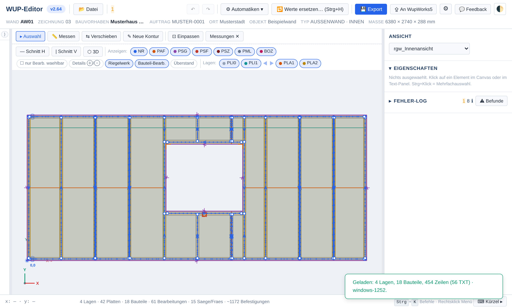

Check and edit WUP files
Three free tools for the machine files used in timber-frame element production. They run in the browser, need no installation and send no file to the network.
The user interface is German. The tools can also be downloaded and used offline.

The tools
- WUP Editor
- Opens a WUP file and shows it in plan view, section and 3D. Checks it against 25 rules, from a missing nailing exclusion area to nail rows on a panel edge or an unknown device. Operations can be changed, moved and created; automatics compute overcuts and undercuts, relief cuts and exclusion areas. An unchanged file is written back byte for byte.
- WUP Editor Overview
- Loads a whole job at once, shows one card per wall with its findings and runs checks and automatics across all files. A single wall opens in the editor with one click and comes back changed.
- WUP MCP server
- Makes the same checks and automatics available to AI assistants through the Model Context Protocol, plus search in the WUP interface specification. Needs Node.js 18 or newer and no packages:
Put your machine's device assignment intonode Wup/Mcp/wup_mcp_server.jsWup/Mcp/profil.json; details are in the server README and the installation guide (German).
Download
Each tool is a single HTML file that runs in the browser with a double-click. The file name contains the version and the date and time of the download, e.g. wup_editor_v2.65_2026-11-13_1432.html. Put both files into the same folder; on first start the overview asks once for the editor file.
| Tool | Version | |
|---|---|---|
| WUP Editor | Download | |
| WUP Editor Overview | Download | |
| WUP MCP server | ZIP from GitHub |
Nine invented example walls, one of them deliberately faulty:
Before first use
- Enter the device assignment. On first start the editor asks which nailing or stapling unit of your machine sits behind which NR index. Without it, every nail row is reported as unknown.
- Check the machine values. Maximum wall size, saw and router depth and the relief-cut settings are the defaults of one machine; change them under Automatik-Einstellungen.
- Try an example wall. Download the examples above.
The detailed documentation is in German: Doku.
Check every file before production. The tools write machine files and are provided without any warranty. What they report, or fail to report, does not replace a check by a qualified person.
Source and license
The source is on GitHub under the GNU General Public License 3.0. Issues and suggestions are welcome there.
“WUP” is the name of the file format. The tools are not a product of WEINMANN Holzbautechnik GmbH or HOMAG; the interface specification included in the repository was published by WEINMANN under the MIT License.